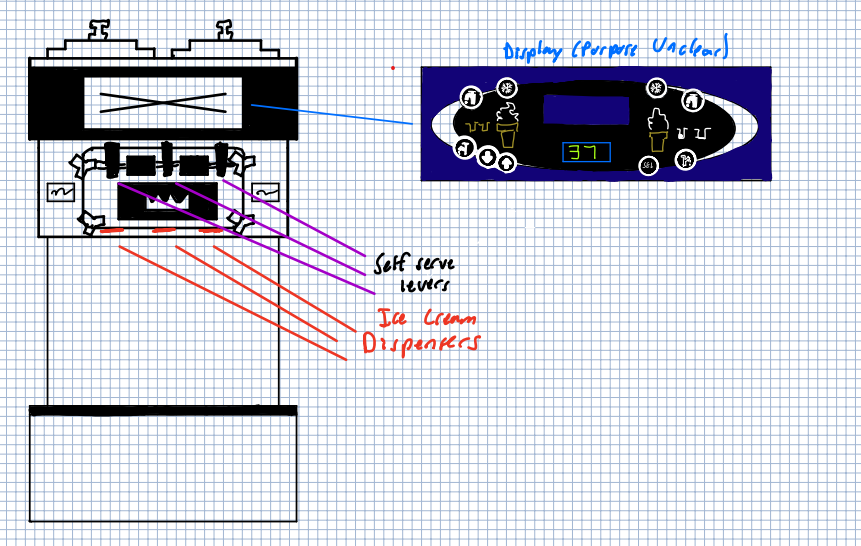

Preparation
Below are sketches and an initial description used in preparation for the development of the personas
Component Sketch

Simply put, this interface is trying to dispense the selected ice cream flavor to the students of Brown University. Each lever pulled dispenses a different flavor or combination of flavors from the dispenser below each lever, and the interface above the levers serves as a control panel not meant to be used by normal diners.
Observation
Three students were observed utilizing the Ratty's ice cream machine. After watching them and their reactions to the interface, as well as their experiences with the machine, I proceeded to ask for interviews. The information below relates my observations, as well as the information given to me by the interviewed.
Observation Notes:
- Observation 1: About half of users would sometimes walk up to the interface, stare at it, and then either serve themselves or walk away
- Observation 2: Once a user decided to serve themselves, they would pull on a lever (left for vanilla, middle for mix, right for chocolate)
- Observation 3: As the interface has no visible indicator, if the lever pulled did not produce ice cream, some users would just walk away dissapointed
- Observation 4: If their initial lever of choice fails, some users will resort to pulling the other two to check if those work
- Observation 5: Some users, rather than pull the levers, will look at the buttons in the interface's top panel (usually when it is out of service)
Interview Questions
Below are the interview questions asked of each subject, as well as the aggregate of the response obtained.
Why did you decide to use the ice cream machine?
All users noted their general enjoyment of the product produced by the machine. Some cited sustenance (calories) as their rational, while others described it as a good source of sugar to make it through the day. Others simply used it to try to cleanse their pallate of what they saw as "gross food"
Although this assignment focused on form and functionality of an interface, the motivation for using the interface is just as important. Thus, although it seemed obvious, I felt it was worth asking
What are some aspects you like about the method of utilizing the ice cream machine?
Generally, users appreciated the simplicity of the interface and the control it granted as some of their favorite aspects of the the design. They noted that it functioned exactly as expected (in accordance with their affordances)
What are some issues you have with the ice cream machine’s interface?
Users cited downtime and lack of downtime indicators as two of their biggest issues with the current interface. In addition, users noted that their is a whole panel of buttons that do not serve any function, and that due to the limited amount of accessibility (only one person can use it at once), lines to use the interface could be long.
When you use this machine, what do you expect?
Users expected that when the interface is fully put together, the machine to simply require the pulling of a lever and the dispensement of ice cream rather than that of a "milky white substance"
If you could improve one thing about the interface, what would you change?
Users cited a desire for removal of irrelevant buttons, an expansion of the interface that made mroe users able to access the machine at once, indicators that specified a flabor was out, and a potential third option of ice cream flavors